Aquarius
Nueva Imagen · Key Visual y bajada a trade
Dirección de arte
Case · Dirección de arte · Shopper marketing
Un sistema visual que ordena a Del Valle, Ades, Aquarius Kids y Vital bajo una sola plataforma infantil de The Coca-Cola Company, con un key visual de vuelta a clases, shooting lifestyle y material POP para toda la ruta de supermercado.
La plataforma KIDS agrupaba jugos, bebidas vegetales y aguas en envases de 200 ml pensados para niños. El reto era meter varias marcas, cada una con su identidad, dentro de un solo key visual que se leyera como un todo y mantuviera el endorsement de "Productos de The Coca-Cola Company" sin que ninguna le ganara a otra.
El sistema tenía que funcionar en la ruta de supermercado completa, desde el afiche de campaña hasta las torres de góndola, los exhibidores de isla, los racks de agua y los exhibidores de mesón, con producción masiva para distintos puntos de venta.
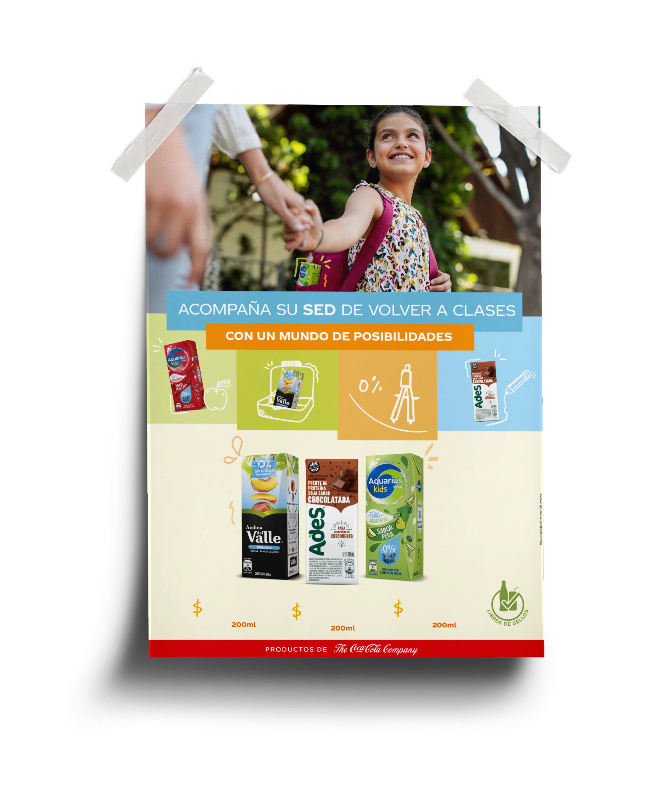
El eje fue la vuelta a clases y la curiosidad de los niños, con una línea verbal del tipo "Acompaña su sed de volver a clases, de descubrir, con un mundo de posibilidades". Encima armé un sistema de bloques de color (celeste, verde, naranjo, rojo) con ilustraciones de trazo infantil: lonchera, lápiz, manzana. Los colores ordenan las marcas sin que una le gane a otra.
El cierre siempre en rojo, con el sello "Productos de The Coca-Cola Company", funciona como endorsement del portafolio. Después vino el shooting lifestyle de toda la plataforma: niños, colaciones, mochilas y momentos en familia, pensados para alimentar afiches, redes y material POP a lo largo de todo el año escolar.
Plataforma KIDSNiños, colaciones, mochilas y momentos en familia para la plataforma KIDS.
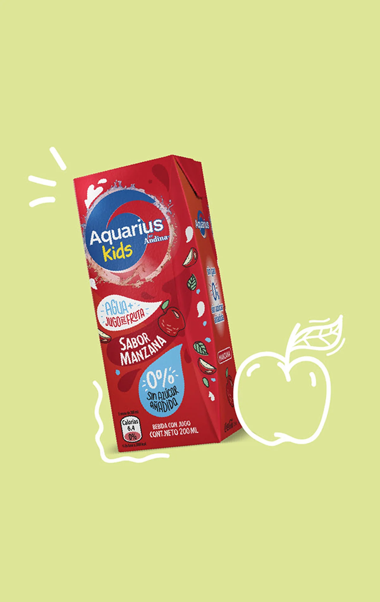
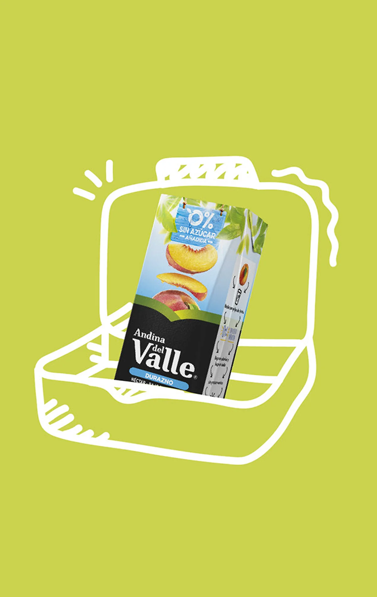
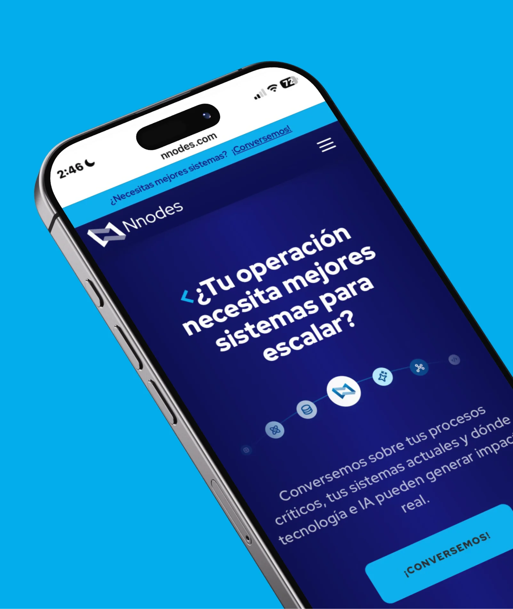
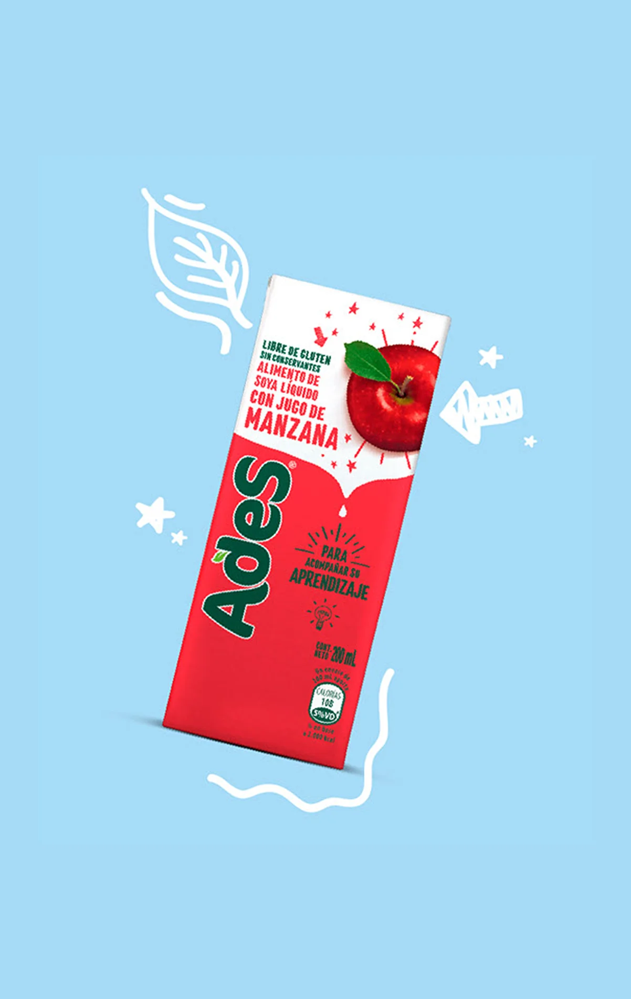
Módulos para la ruta de supermercado, construidos sobre el mismo sistema de bloques.
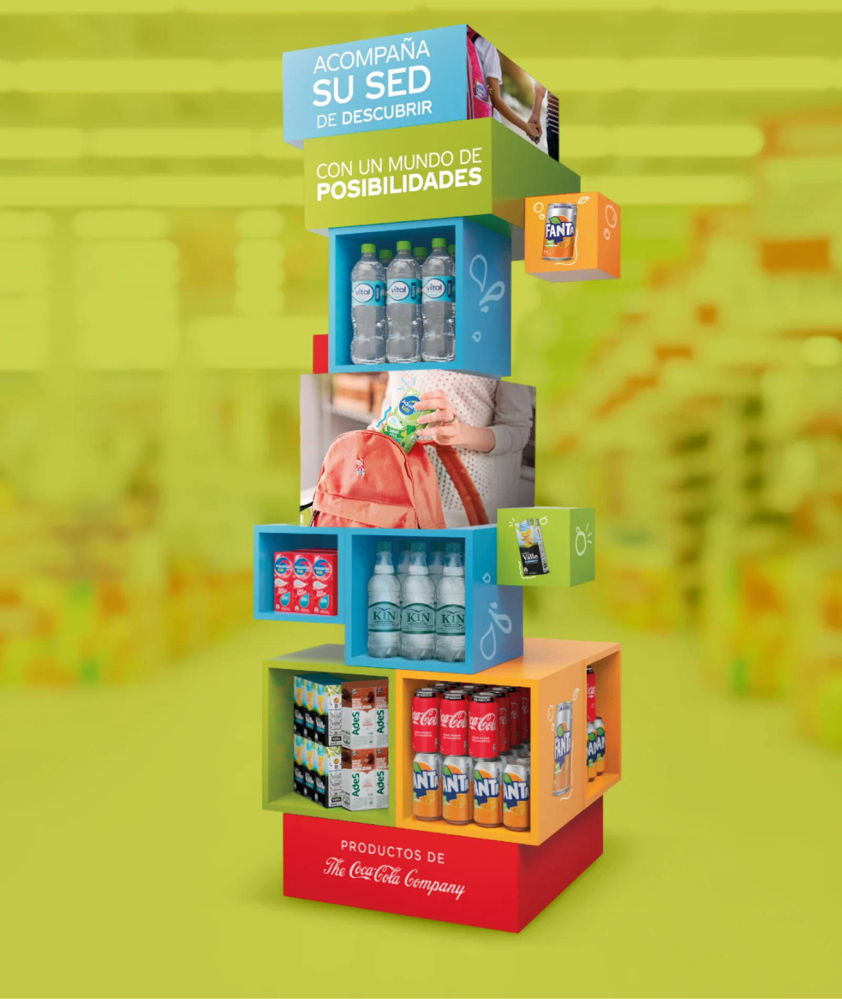
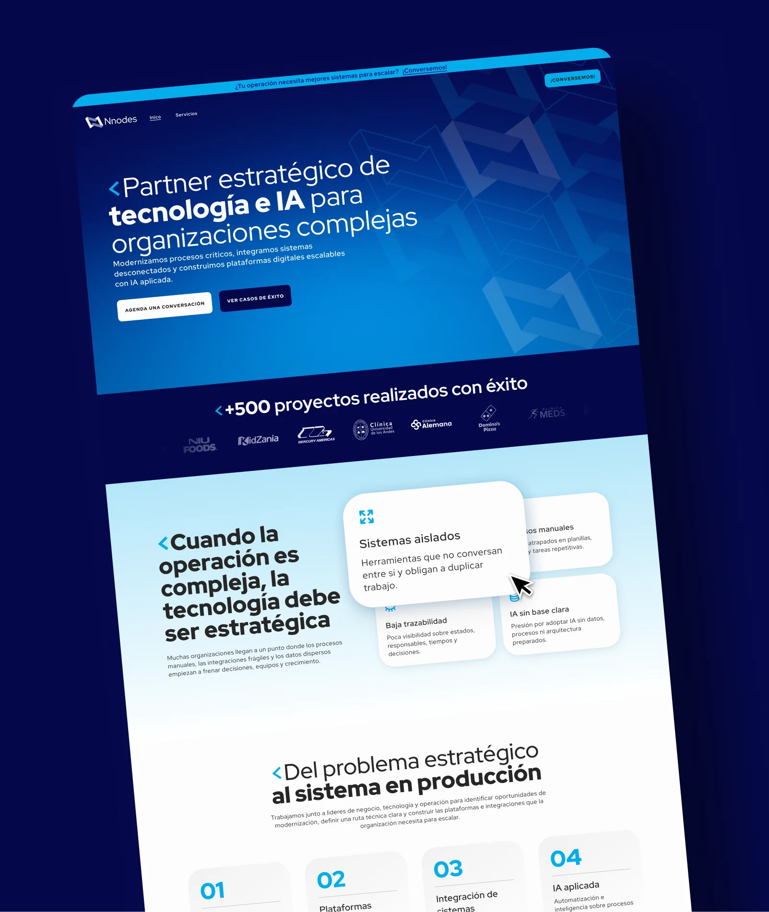
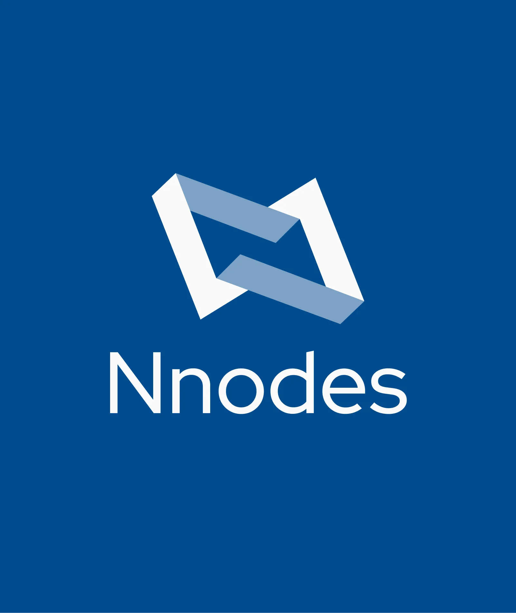
Pieza principal de impacto para el punto de venta.
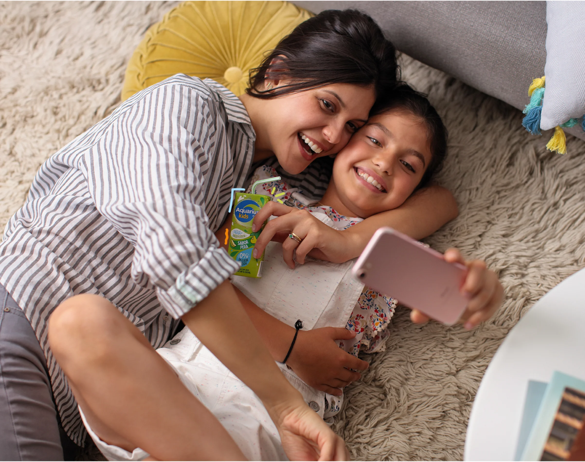
"Sabor y nutrición para la lonchera", con rack metálico dedicado al formato agua.
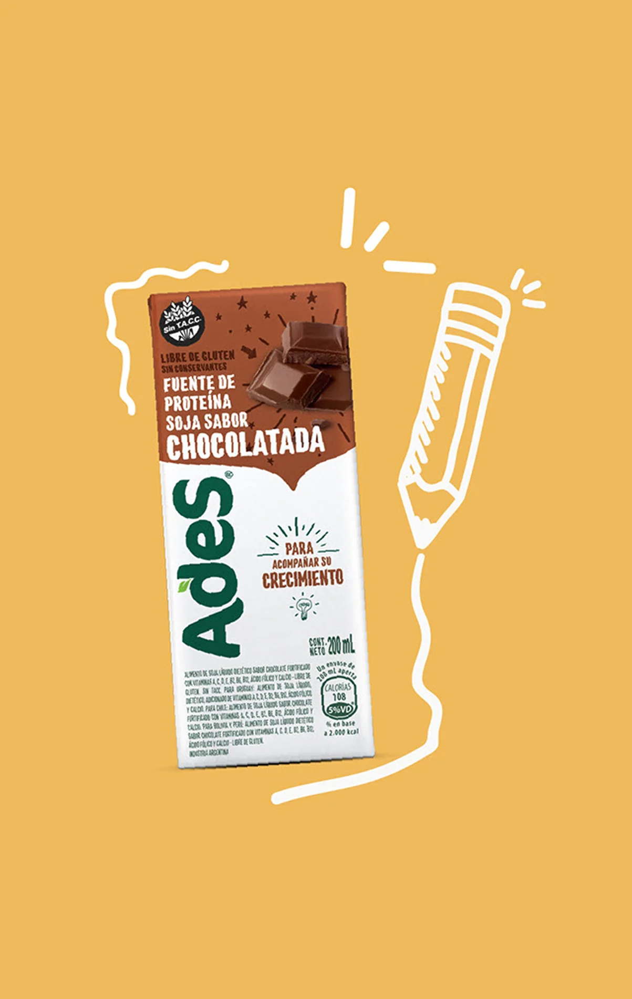
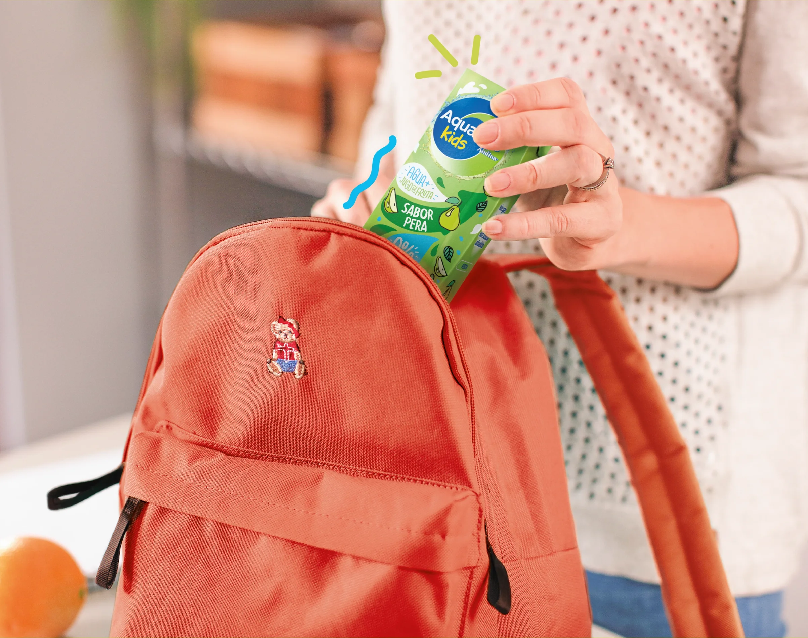
Cliente The Coca-Cola Company · Coca-Cola Shopper
Agencia GREY Chile
Art Director Erika Pinedo [confirmar]
Año 2018 a 2019 [confirmar]
Disciplinas Dirección de arte, diseño gráfico, shopper marketing, trade / POP, dirección de shooting
Herramientas Photoshop, Illustrator
- Todos los derechos reservados -
Trabajo previo como Art Director en GREY Chile. El crédito del proyecto corresponde a la agencia y al cliente; esta ficha documenta mi rol en la dirección de arte.